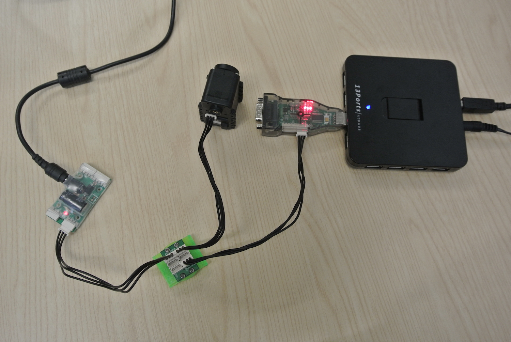

Running the GummiArm requires in total 19 motors (+2 optional for the hand). All of them (excepts the optional ones) are Dynamixel ones. This hardware part costs 4430 $ (see homepage for further information)
Here is the latest layout of the GummiArm. You can see on the following picture numbers on each motor, it corresponds to the ID we chose. We numbered that way to enable future modifications (adding articulated parts) without having to re-ID all the servos. Servos 1-8-11-15-25 and 101 (used for the head but not on the drawing) are Dynamixel AX-12A (you can of course use AX-12+). Servos 2-3-4-5-6-7 are Dynamixel MX-106. The rest is mentionned on the layout.

Before going ahead, we would like to specify one point about AX12-A used. For all of them (except ID 101), we opened the servo to take off all the little gears to use them like an encoder. These "unmotorised servos" are used to enable rotating moves. You can find great tutorials to learn unmounting/mounting here.
Before using servos, we need to configure them. All the code provided on the github assume that the servos have the good ID and the appropriate baudrate to communicate with ROS. We recommand you here to have some post-it to note the ID of each servos once configured (or you can write the number beyond it !). To configure them properly we are using herborist from python Pyplot package (you can get herborist here). First take the isolating plastic part (download here), and fix on it a Dynamixel AX/MX 3 Pin Bus Hub with 4 screws. Link via the usb Hub the SMPS2Dynamixel with the motor and the motor directly connected to the USB2Dynamixel (plugged to your computer or USB HUB) like on the left picture. Once you switch on the power supplier set to the good parameters, you just need to run herborist. By default, motors' baudrate is 57600 , so we recommand you to search with 1M et 57600 baudrate to find your servo. Once you entered the good ID and selected the good baudrate juste click on Update EEPROM.

Servos 101 and 8 :
Power supplier settled at 12V and 0.1A
SMPS2Dynamixel (X2)
Servos 4 and 5
Servo 4
Servo 5
Servos 6 and 7
Servo 6

Servo 7
Servos 15, 1 and 11
S1,11,15
Servo 7
Servo 7